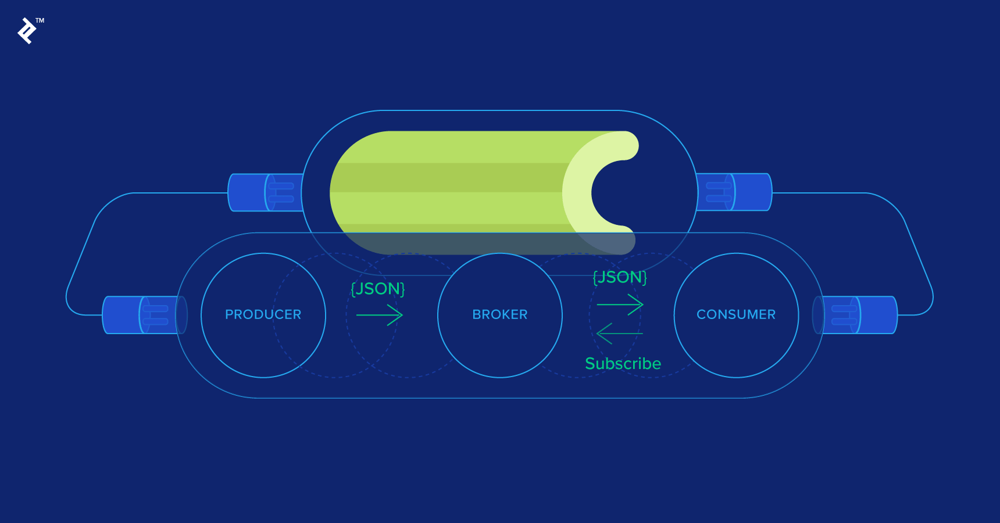
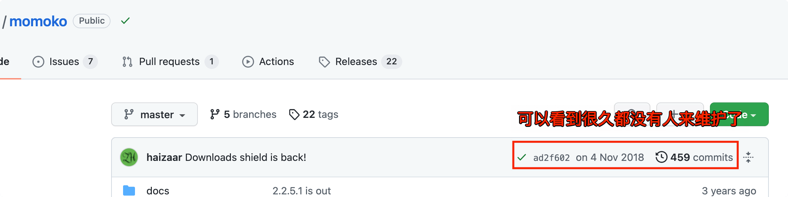
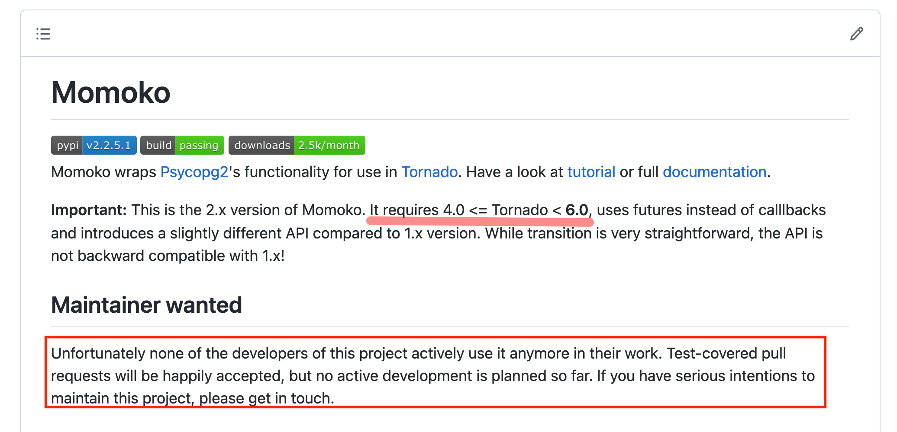

纸上得来终觉浅，绝知此事要躬行。
Celery 是一个简单、灵活且可靠的，处理大量消息的分布式系统，并且提供维护这样一个系统的必需工具。它是一个专注于实时处理的任务队列，同时也支持任务调度。

1. 报错表象
日志虽然删除了敏感信息，但不影响问题的排除！
有一个测试环境发生报错，发现服务重启之后，可以正常使用一小段时间。但是，后续使用的话，就发现无法假死，不响应了。下面，是我排除日志发现的，异常表象。
- [1] 执行
Celery命令初始化worker任务- 命令：
celery -A app.worker.task worker -c 4 -Q celery
- 命令：
# ==> 生成并初始化四个进程 <==
[11:53:44,396 MainProcess] basic.qos: prefetch_count->4
[11:53:44,396 MainProcess] to doing somethings ...
- [2] 第一批取任务
- 第一次四个进程都可以正常执行完成任务
- 主进程收到任务 -> 从任务池中取到任务 -> 主进程接收任务 ->
Fork的子进程执行任务 -> 任务执行完成
# ==> 第一个进程执行队列任务(第一次执行) - 执行完成 <==
[11:54:27,435 MainProcess] Received task: worker.tasks.task-1 [771c4ae8-54bc-4686-be2a-3d34abf9143b]
[11:54:27,436 MainProcess] TaskPool: Apply <function _app_run_task at 0x7fd8f000048> ()
[11:54:27,437 MainProcess] Task accepted: worker.tasks.task-1 [771c4ae8-54bc-4686-be2a-3d34abf9143b] pid:1179
[11:54:27,442 ForkPoolWorker-1] connecting to database: host=postgres port=5432 dbname=app user=postgres password=app
[11:54:27,504 ForkPoolWorker-1] to doing somethings ...
[11:54:29,882 ForkPoolWorker-1] Task worker.tasks.task-1 [771c4ae8-54bc-4686-be2a-3d34abf9143b] succeeded
# ==> 第二个进程执行队列任务(第一次执行) - 执行完成 <==
[11:54:29,792 MainProcess] Received task: worker.tasks.task-2 [01faa7b3-914b-4977-8f4c-d902942ea5f5]
[11:54:29,794 MainProcess] TaskPool: Apply <function _app_run_task at 0x7fd8f000048> ()
[11:54:29,795 MainProcess] Task accepted: worker.tasks.task-2 [01faa7b3-914b-4977-8f4c-d902942ea5f5] pid:1180
[11:54:29,799 ForkPoolWorker-2] connecting to database: host=postgres port=5432 dbname=app user=postgres password=app
[11:54:29,827 ForkPoolWorker-2] to doing somethings ...
[11:54:31,863 ForkPoolWorker-2] Task worker.tasks.task-2 [01faa7b3-914b-4977-8f4c-d902942ea5f5] succeeded
# ==> 第三个进程执行队列任务(第一次执行) - 执行完成 <==
[11:54:29,867 MainProcess] Received task: worker.tasks.task-3 [15388fbe-02fe-4773-adfd-97e4f6183eb7]
[11:54:29,869 MainProcess] TaskPool: Apply <function _app_run_task at 0x7fd8f000048> ()
[11:54:29,872 MainProcess] Task accepted: worker.tasks.task-3 [02db9241-b0d9-4858-9769-3c4663a683e4] pid:1181
[11:54:29,875 ForkPoolWorker-3] connecting to database: host=postgres port=5432 dbname=app user=postgres password=app
[11:54:29,902 ForkPoolWorker-3] to doing somethings ...
[11:54:32,002 ForkPoolWorker-3] Task worker.tasks.task-3 [02db9241-b0d9-4858-9769-3c4663a683e4] succeeded
# ==> 第四个进程执行队列任务(第一次执行) - 执行完成 <==
[11:54:29,870 MainProcess] Received task: worker.tasks.task-4 [02db9241-b0d9-4858-9769-3c4663a683e4]
[11:54:29,870 MainProcess] TaskPool: Apply <function _app_run_task at 0x7fd8f000048> ()
[11:54:29,872 MainProcess] Task accepted: worker.tasks.task-4 [15388fbe-02fe-4773-adfd-97e4f6183eb7] pid:1182
[11:54:29,875 ForkPoolWorker-4] connecting to database: host=postgres port=5432 dbname=app user=postgres password=app
[11:54:29,974 ForkPoolWorker-4] to doing somethings ...
[11:54:35,016 ForkPoolWorker-4] Task worker.tasks.task-4 [15388fbe-02fe-4773-adfd-97e4f6183eb7] succeeded
- [3] 第二批取任务
- 第二次四个进程都执行到初始化数据库的时候给卡住了
- 主进程收到任务 -> 从任务池中取到任务 -> 主进程接收任务 -> 初始化数据库 -> 卡住
# ==> 第一个进程执行队列任务(第二次执行) - 初始化数据库卡住 <==
[11:54:29,871 MainProcess] Received task: worker.tasks.task-5 [c16d753b-0d17-47a1-93a7-dadc02f04624]
[11:54:29,883 MainProcess] TaskPool: Apply <function _app_run_task at 0x7fd8f000048> ()
[11:54:29,884 MainProcess] Task accepted: worker.tasks.task-5 [c16d753b-0d17-47a1-93a7-dadc02f04624] pid:1179
[11:54:29,886 ForkPoolWorker-1] connecting to database: host=postgres port=5432 dbname=app user=postgres password=app
# ==> 第二个进程执行队列任务(第二次执行) - 初始化数据库卡住 <==
[11:59:22,979 MainProcess] Received task: worker.tasks.task-8 [6d6c89a9-3ac0-490b-8372-2af415992e99]
[11:59:22,980 MainProcess] TaskPool: Apply <function _app_run_task at 0x7fd8f000048> ()
[11:59:22,981 MainProcess] Task accepted: worker.tasks.task-8 [6d6c89a9-3ac0-490b-8372-2af415992e99] pid:1180
[11:59:22,982 ForkPoolWorker-2] connecting to database: host=postgres port=5432 dbname=app user=postgres password=app
# ==> 第三个进程执行队列任务(第二次执行) - 初始化数据库卡住 <==
[11:58:46,059 MainProcess] Received task: worker.tasks.task-7 [67ae30d2-29f0-4f9c-beb4-de5777783dba]
[11:58:46,060 MainProcess] TaskPool: Apply <function _app_run_task at 0x7fd8f000048> ()
[11:58:46,061 MainProcess] Task accepted: worker.tasks.task-7 [67ae30d2-29f0-4f9c-beb4-de5777783dba] pid:1181
[11:58:46,063 ForkPoolWorker-3] connecting to database: host=postgres port=5432 dbname=app user=postgres password=app
# ==> 第四个进程执行队列任务(第二次执行) - 初始化数据库卡住 <==
[11:54:38,314 MainProcess] Received task: worker.tasks.task-6 [1e99f261-9456-41cc-b403-7bee0924a607]
[11:54:38,315 MainProcess] TaskPool: Apply <function _app_run_task at 0x7fd8f000048> ()
[11:54:38,315 MainProcess] Task accepted: worker.tasks.task-6 [1e99f261-9456-41cc-b403-7bee0924a607] pid:1182
[11:54:38,316 ForkPoolWorker-4] connecting to database: host=postgres port=5432 dbname=app user=postgres password=app
- [4] 第三批取任务
- 第三次四个进程都直接卡死
- 主进程收到任务 -> 卡住
# ==> 四个进程第三次执行的时候直接卡死 <==
[12:00:29,708 MainProcess] Received task: worker.tasks.task-9 [47518ef0-c831-4acb-a59d-a2e04e8eb984]
2. 问题排除
celery -A app.worker.task worker -c 4 -Q celery
随即看了下，这个 celery 的 worker 到底干了什么事情。下面是大致的代码，可以看到就是简简单单的初始化了一个 Celery 的对象、配置了下，然后就开始执行 Redis 里面的队列任务以及定时任务等。看着都挺正常的，并没有什么使用或者配置不对的情况，看来并不是这里的原因。
- 任务执行时会调用数据库
from celery import Celery
app = Celery("xxx", broker="", include="")
default_queue = {'queue': "celery"}
app.conf.update(
timezone='Asia/Shanghai',
enable_utc=True,
worker_prefetch_multiplier=1,
......
)
if __name__ == '__main__':
app.start()
因为跑得 worker 任务需要连接数据库进行操作，所以看下下面这个 db.pool 的初始化操作，可以看到是通过 momoko 这个第三方库进行连接的，并且 Web 框架使用的是 Tornado。再结合上述日志的情况，可以看到，直接原因就是 IOloop 卡住了，新来的任务没办法获取到运行权，卡住了。
- 连接数据库初始化
import logging
import momoko
from tornado.ioloop import IOLoop
from app import config
worker_db_conn = None
def init_db(ioloop=None, sync=False, max_size=1, **kwargs):
if worker_db_conn is not None:
return worker_db_conn
ioloop = ioloop or IOLoop.current()
dsn = " ".join("{}={}".format(key, value) for key, value in config.get_config("db").items() if value)
logging.debug("connecting to database: %s", dsn)
_db = momoko.Pool(
dsn=dsn,
size=1,
max_size=max_size,
auto_shrink=True,
ioloop=ioloop,
......
)
if sync:
ioloop.run_sync(_db.connect)
else:
_db.connect()
return _db
其实，排除了很久都没有发现，是什么原因导致出现上述问题的。加之，该项目使用的 Web 框架 Tornado 近期也做了升级，随即考虑排除下使用的第三方库来看看是不是因为这个原因引起的。后来翻看发现了 momoko 这个第三方库，在 Tornado5.x 以后不再兼容 nomoko 了，导致 worker 执行完一次任务后就卡死。但是替换这个第三方库一时半会还有些麻烦，所以这里在 Celery 中临时加了下面这个参数配置，即执行一次后就销毁 worker 执行，从而间接的避免队列卡死的情况。
- 临时的处理方式
Tornado 4.x -> Tornado 5.xasyncio -> yield from -> async/await
app.conf.update(
# 执行若干次任务后销毁worker
worker_max_tasks_per_child=1,
......
)
到这里问题已经基本清楚了，但是上面的解决方案还是很鸡肋，所以要想彻底进行处理，就是不再使用 momoko 这个库，而是使用其他的方式或者库进行替代。但是，这里还是要感慨一下，开源软件的痛点 “后期社区不活跃 —> 软件不再维护 —> 废弃” 的这一过程。
- 永久的处理方式 - 下面是
momoko这个库的现状


3. 写在最后
思考问题与总结教训，防止后续再次发生！
到这里，其实已经不用在纠结这个问题真实原因了，需要思考的就是：在以后新建项目进行技术选型的时候，一定要找那些 经得起时间考虑 的第三方依赖和框架，不然等它们跑路了，可能你已经积重难返，奈何需要自己来 fork 一份代码，后续自行进行后续开发和维护工作。我们都知道，这将是一件非常痛苦的事情。